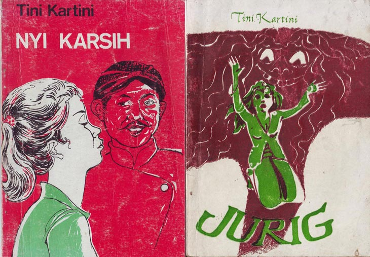

Abdul Wahyu Affandi[1] atau lebih dikenal dengan Doel Sumbang (lahir di Bandung, Jawa Barat, 16 Mei 1963; umur 55 tahun) adalah seorang musisi asal Jawa Barat. Ia mengawali karier di dunia teater pada " Teater Braga ". Dan banyak belajar juga dari Remy Sylado yang tak lain.adalah pimpinan Dapur Teater 23761, Dari sanalah ia mendapatkan nama julukan "Doel" , nama "Sumbang" dikaitkan dengan lagu-lagunya yang nyeleneh, vulgar, dan tengil. Ia meraih kesuksesan lewat duetnya dengan Nini Carlina lewat lagu Kalau Bulan Bisa Ngomong, Aku Cinta Kamu dan Rindu Aku Rindu Kamu serta duetnya dengan Ikko lewat lagu Cuma Kamu.
Sri Baduga Maharaja atau Prabu Siliwangi (Sunda: ᮞᮢᮤ ᮘᮓᮥᮌ ᮙᮠᮛᮏ atau ᮕᮢᮘᮥ ᮞᮤᮜᮤᮝᮍᮤ) (Ratu Jayadewata) putra Prabu Dewa Niskala putra Mahaprabu Niskala Wastu Kancana lahir 1401 M di Kawali Ciamis, mengawali pemerintahan zaman Pakuan Pajajaran Pasundan, yang memerintah Kerajaan Sunda Galuh selama 39 tahun (1482-1521). Pada masa inilah Pakuan Pajajaran di Bogor mencapai puncak perkembangannya.
Raden Otto Iskandardinata (Sunda: ᮛ᮪ᮓ᮪. ᮇᮒ᮪ᮒᮧ ᮄᮞ᮪ᮊᮔ᮪ᮓᮁᮓᮤᮔᮒ, Latin: Rd. Otto Iskandardinata; lahir di Bandung, Jawa Barat, 31 Maret 1897 – meninggal di Mauk, Tangerang, Banten, 20 Desember 1945 pada umur 48 tahun) adalah salah satu Pahlawan Nasional Indonesia. Ia mendapat nama julukan si Jalak Harupat.
P. H. H. Mustapa (1852-1930) adalah tokoh sastra Sunda terbesar pada zaman kolonial yang banyak menulis dangding dan wawacan. Sekitar tahun 1900-an, misalnya, P.H.H. Mustapa sempat menulis lebih dari 10.000 bait dangding yang kualitas literernya dianggap bermutu tinggi. Selain itu ia pun banyak menulis anekdot dan prosa. Namun kebesarannya baru disebut-sebut pada tahun 1950-an oleh Ajip Rosidi, yang selanjutnya memicu para peneliti untuk mendalaminya. Tahun 1965 P. H. H. Mustapa mendapat penghargaan dari Gubernur Jawa Barat dan pada tahun 1977 Presiden RI memberikan Anugerah Seni kepadanya sebagai sastrawan daerah Sunda.
Muh. Musa (1822-1886) adalah pelopor sastrawan Sunda pada paruh kedua abad 19. Karya-karyanya dalam bentuk wawacan (11 judul) dan prosa (33 judul), baik asli maupun terjemahan, banyak diterbitkan pemerintah kolonial pada waktu itu. Wawacan Panji Wulung, merupakan salah satu karyanya yang cukup populer di masyarakat Sunda. Berkat jasa dan hubungannya yang baik dengan pemerintah kolonial, Muh. Musa sempat memperoleh medali emas. Muh. Musa pun banyak mengusahakan buku bacaan berbahasa Sunda. Menurut catatan Moriyama (2005), Muh. Musa sedikitnya menerbitkan 14 judul buku yang dicetak pada zaman pemerintah kolonial.

D.K. Ardiwinata (1866-1947) adalah tokoh sastra Sunda pada zaman Balai Pustaka yang banyak menulis novel. Baruang ka nu Ngarora (1914) adalah novel pertama berbahasa Sunda yang ditulis oleh D.K. Ardiwinata. Selain itu ia pun menulis dongeng dan banyak menyadur karya-karya pengarang dunia.
Yuhana (nama aslinya Achmad Bassach) adalah pengarang novel Sunda yang karya-karyanya setia diterbitkan oleh penerbit swasta. Tidak tercatat satu pun novelnya yang diterbitkan Balai Pustaka. Novel populernya yang pertama adalah Carios Eulis Acih (1923). Novel tersebut menuai sukses besar pada waktu itu dan sempat dibuat film. Setelah itu keluar novelnya yang lain, seperti Neng Yaya (1923), Agan Permas (1926), dan yang paling terkenal Rasiah nu Goréng Patut (1928) atau lebih dikenal dengan Karnadi Anémer Bangkong karena tokoh utamanya bernama Karnadi.
GS bernama lengkap G. Sastradiredja. Namun menurut R. Éro Bratakusumah, GS bernama lengkap G. Soewandakoesoemah. GS adalah pelopor penulisan cerpen berbahasa Sunda. Dogdog Pangréwong (1930) adalah kumpulan cerpennya yang pertama dalam bahasa Sunda dan merupakan kumpulan cerpen yang pertama terbit di Indonesia. Isinya delapan cerpen bernada humor yang dialog antartokohnya terasa hidup.
Tini Kartini dapat disebutkan sebagai pengarang wanita cukup kuat dalam cerpen Sunda. Kumpulan cerpennya yang pertama terbit ialah Jurig!, Paméran, dan Nyi Karsih. Selain itu Tini Kartini banyak melakukan penelitian tentang sastra dan sastrawan Sunda. Meskipun keduanya berbeda zaman, namun dalam hal kepengarangannya, baik GS maupun Tini Kartini termasuk tokoh berpengaruh dalam sastra Sunda, terutama dalam penulisan cerpen.
Kis Ws (1922-1995) adalah pelopor dan pembaru dalam penulisan sajak Sunda. Kis Ws adalah orang Sunda pertama yang menulis sajak Sunda sekitar tahun 1950-an. Sempat terjadi polemik ketika sajaknya untuk pertama kali dimuat dalam Sk. Sipatahunan, karena pada waktu itu orang Sunda lebih mengenal dangding. Selain menulis sajak, Kis Ws pun banyak menulis cerpen dan esai.